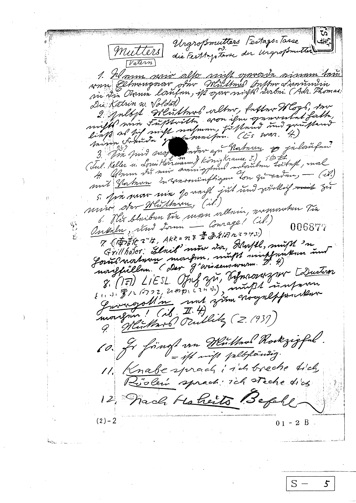

『冠詞の思想』にも書きましたが、昭和に活躍したドイツ語学者、関口存男は30年ほどをかけて2万5千ページにのぼる膨大な文例集を残しました。ご長男の存哉（いくや）さんのご尽力もあり、文例集は現在、慶應義塾大学、浜松医科大学、大阪大学に保管されています。しかし、文例集の保管の旗振りとなった研究者はすでに物故あるいは引退しました。管理はされているらしいものの、誰かが使ったという話も聞かず、十分に活用されている状況ではなさそうです。一時期、大阪大学サイバーメディアセンターでは文例集の一部が公開されていましたが、現在は見られなくなりました。
私はたまたま、大阪大学所蔵の文例集の電子版を入手しました。入手した者の責任として、まだ誰も手を付けていない文例集の翻刻と電子化を本サイトでしていきたいと考えています。なお大阪大学にあったのは文例集オリジナルのコピーです。A4のドッチファイルに綴じられています。
| 2000年頃 | 大阪大学に文例集が寄贈され、一部電子化される。 |
| 2018年4月 | 管理人が文例集電子版を受領 |
| 2018年5月 | 目次から電子化作業開始 |
| 2019年1月 | 目次の電子化終了、オンライン化作業 |
| 2021年7月 | 全画像のTIFFから GIFへの変換作業 |
| 2021年8月 | 静的サイトの形で全文例集を公開 |
ウェブへの公開は泥臭い作業の連続でした。いくら文例集が電子化されていると言っても、画像データ（TIF形式）しかありません。もちろん、それでも大変助かります。なにせ2万5千ページもあるのですから。複合機のソーターで一気にやってもファイルの整理にかなりの時間を要したでしょう。紙の電子化の手間と時間が省けたのは大きいです。当時としてはTIFが一番きれいに保存できる形式だったそうです。
目次はすべてワープロ（！）で作られていたようで、文字データはありません。まずは画像から文字を読むべく、Googleが公開しているOCRソフト「Tesseract」を使いました。ただ、Tesseractも読み込む際には言語を指定しないといけません。おそらくデフォルトは英語でしょうが、関口の文例集は99％がドイツ語か日本語です。目次に関しては私は日本語で読み込みました。
日本語で読み込んでも旧字体、異体字やドイツ語はちゃんと変換されません。目で癖（例えば、sieが813と変換されています）を拾ってある程度は置換することができそうでした。そのため、Tesseractでの読み込みと置換を行うプログラムをpythonで書きました。pythonで書いたら勝手に作業してくれるから楽なのですが、更に目で見て修正しないといけません。一つ一つファイルを開いて、手と目で文字を修正し、同時に変換しやすいようCSV形式にしました。Tessearctがなかったらもっと苦労したことでしょう。テクノロジーの進歩にずいぶん助けられました。仕事を終えて帰ってから毎日こつこつと作業を行い、半年以上はかけて目次の電子化が終わりました。
文例集の公開まであと一歩のところに来ましたが、もう一つやらないといけないことが残っていました。2021年8月現在、TIFF形式はそのままではウェブサイトに表示できません。以前、大阪大学サイバーメディアセンターのページで公開されていた時はおそらくC#を使ったアプリケーション経由で表示させていましたが、アプリケーションを入れると挙動が遅くなること、そして何より私にその技術がないことから、おとなしくGIFに変換しました。画像ファイルだけで2万以上あるのですから、Image Tunerという自動変換ソフトを用いましたが、1か月かかりました。
目次を終えると次は本文です。目次は関口が書いたものではありません。半年以上費やしても、まだ文例集の電子化の本丸にすらたどり着けていません。本文は愚直にできるところから翻刻していくつもりです。
というのも、関口は晩年はタイプライターで書いていますが、初期はSütterlinで手書きをしていたり、Frakturで書かれた新聞記事を貼り付けたりしています。私はたまたま、学部生の一時期に戦前に出版された関口の教科書でドイツ語を習ったのでどちらも読めますが、歴史学等一部の分野の研究者以外では読むのは難しいでしょう。また日本語のメモ書きにも異体字や旧字、旧仮名遣いが多く使われています。これもまた、戦前に出版された関口の教科書で学んだ私は抵抗なく読めますが、そうした訓練（慣れ）がないと読解は厳しいかもしれません。
2万5千ページですから、1日1ページやったところで68年かかる計算です。そうすると私の人生の締切が来てしまうので、その前には終えたいなと思っています。
次にくる技術と言われて久しい（2022年8月現在）静的サイトジェネレーターでウェブサイトを作成しようとしましたが、あまりにもファイル数が多く、Gatsbyやhugoではデプロイに時間がかかりすぎてできませんでした。加えてhugoでは現在の私の技術で理想とするページのデザインができませんでしたので、おとなしく静的サイトをホスティングサイトにアップロードしていったん公開しました。間違えて何度かアップロードしたため、無料枠を超えて少しお金がかかってしまったのは誤算でした。今後はErder.jsという静的サイトジェネレータを見つけたので、そちらだと大規模サイトが構築できるらしく、挑戦してみたいと思っています。
ゆっくり公開していきます。焦らずお待ちください。
最初のころは自分でやっていましたが、最近はGoogle Translateのほか、DeepL翻訳や未来翻訳も使っています。ご了承ください。
なお、関口の文例集は個人的なメモのため、一部綴字誤りなどがあります。ご了承ください。
私が死んだあとは管理する者もいませんからまた元の木阿弥に戻ります。 Wayback Machineには残ると思いますが、完璧に残ることは保証されません。将来的にはTexか何かで組み直して出版し、国会図書館に納本するか、青空文庫に入れていただけるとありがたいなと思っています。
※ 本サイトではサービス向上のためGoogle, Inc.のGoogle Analyticsを利用してサイトの計測を行っています。生成されるテキストファイル「Cookie」を通じて分析を行うことでIPアドレス等の情報の一部が、Google, Inc.に収集される可能性があります。サイト利用状況の分析、その他のサービスの提供目的に限りこれを使用します。利用者は、本サイトを利用することで、上記方法および目的においてGoogleが行うこうしたデータ処理につき許可を与えたものとみなします。
{kind=link}